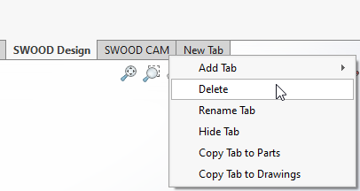
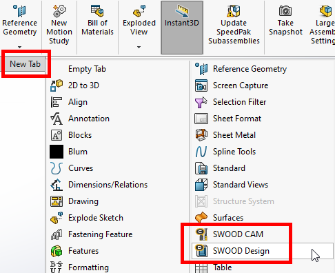

Reset Swood Tabs
Overview
There may be occasions where the Swood Tabs in the SolidWorks Command Manager gets scrambled or options might be missing. The best way to fix this issue is to recreate the Swood Tabs.
How to Reset the Swood Tabs
- Open a part file in Solidworks.
- Right click the SolidWorks Command Manager and select Customize.
- Delete the Swood Design and Cam Tabs by right click > Delete.

- Add the Swood Tabs by clicking the New Tab button and then select both Swood Design and Swood Cam options.

- Open an assembly part and repeat the same process